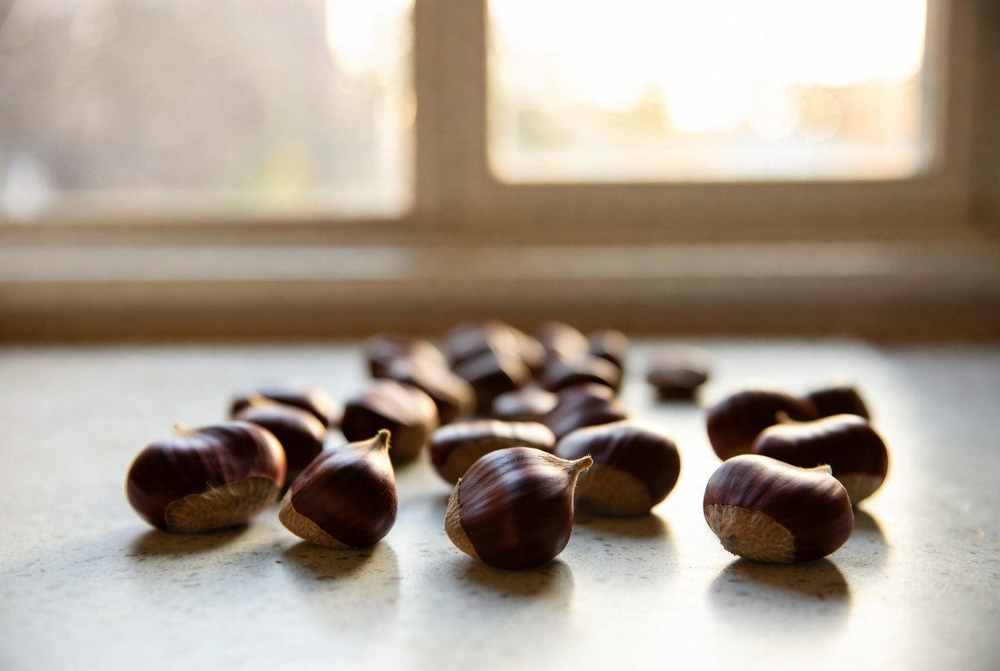

만들려던 빵 / 목표
목표는 변하지 않습니다. 어릴 적 동네 빵집 밤식빵의 속 촉촉함과, 밤이 빵과 한 덩어리처럼 느껴지는 식감. 중간 정리에서 5차가 1~4차 중 가장 가까웠다고 적었지만, 단맛이 기억보다 올라갔다는 항목이 남아 있었습니다.
2025년 9월 14일 6차 실험입니다. 여름 실험(1~5차)을 글로 묶은 뒤, 가을에 다시 오븐을 켰습니다. 5차에서 고정했던 토핑 시점·수분 +2%p·루즈 백 보관·시럽 졸임 +2분은 그대로 두고, 시럽에 넣는 설탕 총량만 10% 줄였습니다. 물 비율·졸임 시간·브러싱 방식은 바꾸지 않았습니다.
5차 당일 메모에 '단맛 보정'이 6차 1순위로 적혀 있었습니다. 졸임을 줄이면 밀착이 약해질 수 있어, 졸임은 유지하고 당만 줄이는 쪽을 택했습니다. 그날은 변수 하나만 — R&D 방식과 같습니다.
가을이라 실내 온도는 여름 5차보다 낮았습니다. 발효 시간은 손가락 눌림 기준으로 맞췄고, '날씨가 시원해졌다'는 이유로 다른 변수를 동시에 건드리지 않았습니다.
실패 1~3 — 눈에 보인 현상
- 단맛 — 5차보다 덜 달게 느껴짐. 가족도 '예전보다 자연스럽다'고 함. 기억과의 거리는 여전히 있으나 방향은 맞음
- 밀착·흘러내림 — 5차보다 소폭 약해짐. 팬 가장자리에 시럽 자국이 아주 얇게 남음
- 다음 날 식감 — 3·4차 조합 덕에 촉촉함은 유지. 겉 껍질은 5차와 비슷
제 기준으로 6차는 단맛 보정의 반쯤 맞았다이었습니다. '가장 비슷하다'는 말은 5차에서 나왔고, 6차는 '단맛만 보면 더 가깝다'는 반응이었습니다. 완성 선언은 하지 않습니다. 밀착이 조금 무너진 것도 기록에 넣었습니다.
실패 목록에 '밀착 약화'를 넣은 이유는, 설탕을 줄이면 단맛과 점착이 같이 움직인다는 트레이드오프를 남기기 위해서입니다. 5차에서 졸임을 늘렸을 때와 반대 방향의 균형 문제입니다.
단면 사진에서 크럼은 5차와 거의 같았습니다. 차이는 윗면 토핑이 살짝 들뜬 구간이 늘었다는 점이었고, 입으로는 '밤이 살짝 따로 노는' 느낌이 한두 입 더 나왔습니다.
설탕을 줄인 날, 시럽이 팬 가장자리까지 흘러내리진 않았지만 밤 조각 아래가 들뜬 구간이 늘었습니다. 딸은 '덜 달아서 좋다'고 했고, 저는 밀착 사진을 더 오래 들여다봤습니다.
원인 추정 (추정 vs 확인)
설탕 -10% → 단맛 감소 — 확인. 가족·본인 모두 5차보다 덜 달다고 함
밀착 소폭 약화 — 추정·부분 확인. 시럽 점도가 낮아져 토핑이 굽기 중 미끄러짐. 졸임 +2분만으로 상쇄되지 않음
다음 날 촉촉함 유지 — 3차 수분 + 4차 보관 효과. 6차 단독 변수 아님
6차를 읽을 때 '설탕만 줄였다'가 아니라 5차 고정값 위에서 설탕만 줄였다는 전제를 함께 봐 주세요. 중간 정리의 고정값 초안이 베이스입니다.
단맛과 밀착이 같은 시럽에서 동시에 움직였습니다. 7차 후보에 재료(신선 밤)를 넣기 전에, 6차 결과를 메모에 '단맛 축·밀착 소폭 희생'으로 적어 두었습니다.
바꾼 변수 하나
고정: 2차 토핑 시점(1차 발효 후), 3차 수분 +2%p, 4차 루즈 백 보관, 5차 시럽 졸임 +2분. 바꾼 것: 시럽 설탕 총량 -10%. 설탕:물 2:1 비율 표기는 유지하되, 저울로 잰 설탕 그램만 5차 대비 10% 줄이고 물은 동일 그램.
2025년 9월 14일, 실내 23°C. 반죽 종료 24°C, 1차 발효 52분(저온 보정), 굽기 200/190°C 32분. 시럽은 5차와 같이 졸임 직후 바로 사용했습니다. 설탕을 줄였다고 졸임 시간을 늘리지 않았습니다. 그날의 변수는 설탕뿐이어야 했습니다.
메모에 '5차 설탕 그램 × 0.9'를 적어 두었습니다. 나중에 비율 표기만 보고 재현하려다 양이 어긋나는 일을 막기 위해서입니다.
다음 시도 계획
- 7차: 6차 조건 유지 + 통조림 밤 → 신선 밤(가을) 재료만 교체
- 밀착 보정은 굽기 후 시럽 브러싱 등으로 8차 후보 검토
- 겨울 실내에서 5·6차 고정값 재현도 병행 메모
6차는 단맛 축에 성공했고, 밀착은 다음 사이클 과제로 넘깁니다. 가을 밤 시즌이 다가와 재료 변수를 먼저 열기로 했습니다.

7차 전에 통조림 밤 재고를 그대로 두고, 신선 밤만 별도 구입해 크기·숙도를 맞춰 두었습니다. 재료를 바꿀 때도 반죽·시럽·보관은 6차와 같게 맞추는 것이 원칙입니다.
5차 단맛 문제를 어떻게 풀었는가
5차에서 졸임 +2분으로 밀착은 최고였지만 단맛이 올랐습니다. 선택지는 세 가지였습니다. (1) 졸임 줄이기 (2) 설탕 줄이기 (3) 굽기 후 별도 시럽. 6차에서는 (2)만 실행했습니다.
졸임을 줄이면 5차에서 확인한 밀착 이득을 되돌릴 수 있어 보류했습니다. 굽기 후 브러싱은 단맛·윤기·밀착이 동시에 움직일 수 있어 8차로 미뤘습니다.
중간 정리의 6차 후보 첫 줄이 '설탕 총량 소폭 감소'였고, 그대로 실행한 날입니다.
9월이라 창문을 열고 반죽했습니다. 바깥 공기가 들어오면 실내 온도가 23°C 근처로 떨어져, 여름 메모의 발효 시간을 그대로 쓰지 않았습니다.
R&D 일지를 읽는 분께
시럽 단맛을 맞추면서 밀착을 유지해 보신 분이 있다면, 설탕을 줄였을 때 졸임 시간을 어떻게 맞추셨는지 문의로 알려 주세요. 오븐·팬·밤 종류에 따라 최적점이 다릅니다.
실전 적용 노트
실험 당일 메모: 2025-09-14, 설탕 -10%, 5차 고정값 유지, 루즈 백 보관. 시럽 졸임 전·후 사진, 토핑 후·굽기 후·다음 날 단면.
설탕을 줄일 때 비율(2:1) 표기만 바꾸지 않고 그램 수를 적었습니다. 5차 메모의 설탕 g에 0.9를 곱한 값을 썼고, 물 g는 그대로였습니다. 작은 차이도 저울 없이는 재현이 어렵습니다.
발행 2026-06-17, 실험 2025-09-14.
6차 메모 맨 위에 '고정: 2·3·4·5차'를 다시 적었습니다. 가을 첫 실험이라 여름 메모를 한 번 더 읽고 시작했습니다. 계절이 바뀌었다고 반죽부터 바꾸고 싶은 충동이 있었지만, 그날은 설탕만 건드렸습니다.
단맛이 '거의 맞다'고 느낀 순간에도 밀착 사진을 같이 남겼습니다. 조금 나아졌다만 골라 적으면 7·8차에서 무엇을 고칠지 헷갈립니다.
정리하며
6차는 5차 고정값 위에서 설탕만 10% 줄인 날이었습니다. 단맛은 기억 쪽으로 한 걸음, 밀착은 소폭 뒤로 물러났습니다. 다음은 7차에서 가을 신선 밤을 써 보겠습니다. 한 조각에서 시작한 프로젝트가 가을에도 이어지고 있습니다. 7차에서 신선 밤을 써 보겠습니다.
초보자가 자주 실수하는 포인트
- 설탕과 졸임 시간을 동시에 바꿔 단맛·밀착 중 무엇이 효과인지 모르게 만들기
- 단맛만 맞았다고 5차 밀착 수준까지 회복됐다고 착각하기
- 비율 표기만 바꾸고 실제 그램 수 변경을 기록하지 않기
- 계절이 바뀌었다며 반죽·발효까지 같이 바꾸기
체크리스트
- 5차 고정값 목록 재확인
- 설탕 그램만 10% 감소 메모
- 단맛·밀착·다음 날 식감 각각 기록
- 트레이드오프 한 줄로 적기
자주 묻는 질문
- 6차에서 졸임 시간도 줄였나요?
- 아닙니다. 5차와 같이 졸임 +2분을 유지했고, 설탕 총량만 10% 줄였습니다.
- 단맛이 맞으면 끝난 건가요?
- 아닙니다. 밀착이 소폭 약해졌고, 재료·굽기 후 처리 등 남은 변수가 있습니다.
이 글은 운영자의 직접 경험을 바탕으로 작성되었으며, 오븐·재료·환경에 따라 결과는 달라질 수 있습니다. 식품 위생·알레르기 등 건강 관련 판단을 대체하지 않습니다.